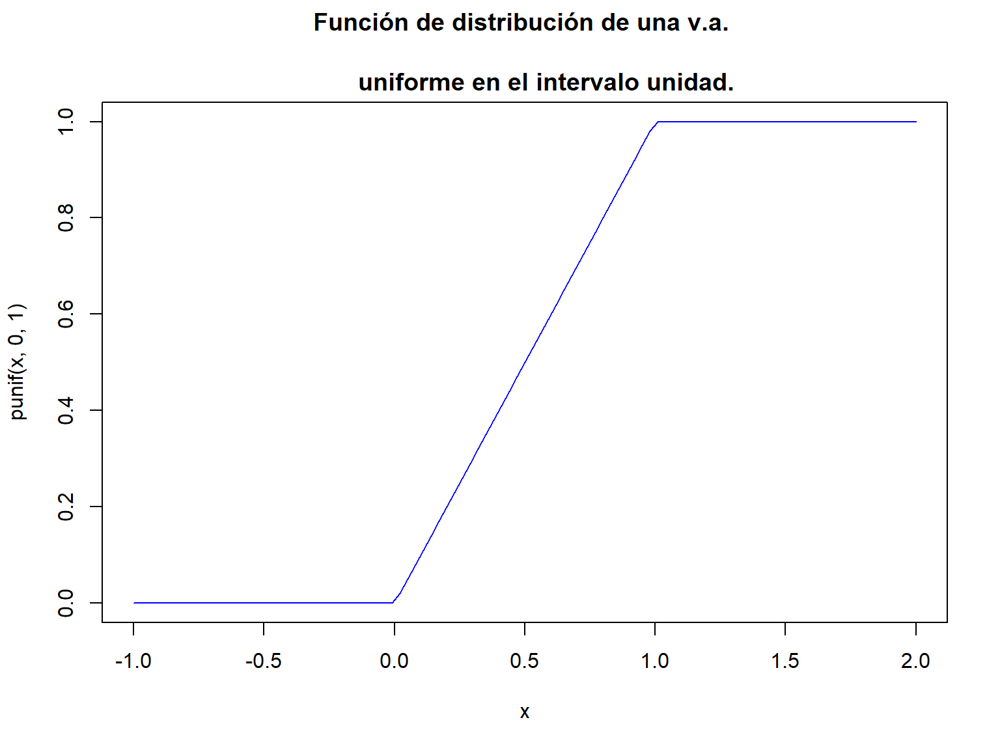
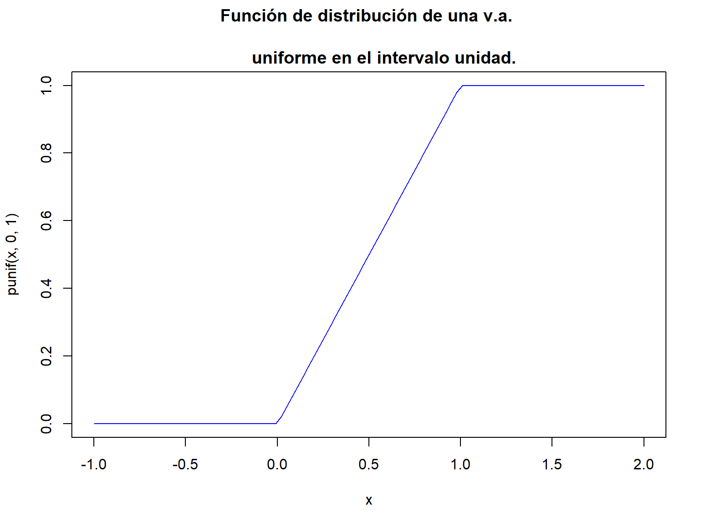
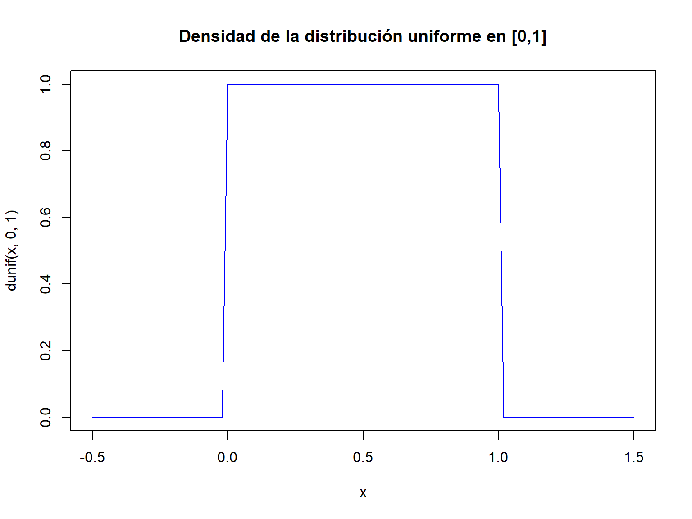

curve(punif(x,0,1),xlim=c(-1,2),col="blue",
main="Función de distribución de una v.a. \n
uniforme en el intervalo unidad.")
Hasta ahora nuestros sucesos han sido de varios tipos: \(\{C,+\}\) en la moneda, nombres de periódicos, ángulos en una ruleta, número de veces que sale cara en el lanzamiento de una moneda etc….
Necesitamos estandarizar de alguna manera todos estos sucesos. Una solución es asignar a cada suceso un cierto conjunto de números reales, es decir, convertir todos los sucesos en sucesos de números reales para trabajar con ellos de forma unificada.
Para conseguirlo utilizaremos unas funciones que transformen los elementos del espacio muestral en números; esta funciones son las variables aleatorias.
Comenzaremos dando una definición poco rigurosa, pero suficiente, de variable aleatoria.
Variable Aleatoria (definición práctica)
Una variable aleatoria (v.a.) es una aplicación que toma valores numéricos determinados por el resultado de un experimento aleatorio
Notación
Ejemplo
Lanzamos un dado convencional de parchís el espacio muestral del experimento es
\[\Omega=\{1,2, 3, 4, 5, 6\}.\]
Una v.a \(X:\Omega\to\mathbb{R}\) sobre este espacio queda definida por
\[X(1)=1, X(2)=2, X(3)=3, (4)=4, X(5)=5, X(6)=6.\]
Consideremos el experimento lanzar una anilla al cuello de una botella. Si acertamos a ensartar la anilla en la botella el resultado del experimento es éxito y fracaso en caso contrario.
El espacio muestral asociado a este experimento será \(\Omega=\{\mbox{éxito, fracaso}\}\). Construyamos la siguiente variable aleatoria:
\[X:\{\mbox{éxito, fracaso}\}\to\mathbb{R}\]
definida por
\[X(\mbox{éxito})=1 \mbox{ y } X(\mbox{fracaso})=0.\]
Hay dos tipos fundamentales de variables aleatorias, las discretas y las continuas.
Damos a continuación una definición informal.
Variables Aleatorias Discretas y Continuas
Ejemplo
Son variables aleatorias discretas:
Son variables aleatorias continuas:
Pasamos ahora a describir el comportamiento de la v.a. Para ello utilizaremos distintas funciones que nos darán algunas probabilidades de la variable aleatoria.
En el caso discreto estas funciones son la de probabilidad, y la función de distribución o de probabilidad acumulada.
En el caso discreto la función de probabilidad es la que nos da las probabilidades de los sucesos elementales de la v.a. que definimos a continuación.
< Función de Probabilidad
La función de probabilidad (probability mass function o incluso abusando de notación probability density function) de una variable aleatoria discreta \(X\) a la que denotaremos por \(P_{X}(x)\) está definida por
\[P_{X}(x)=P(X=x),\]
es decir la probabilidad de que \(X\) tome el valor \(x\).
Si \(X\) no asume ese valor \(x\), entonces \(P_{X}(x)=0\).
Dominio de una variable aleatoria discreta
El conjunto \[D_X=\{ x\in\mathbb{R} \mid P_X(x)>0\}\] recibe el nombre de dominio de la v.a. y son los valores posibles de esta variable.
En el caso discreto lo más habitual es que \(X(\Omega)=D_X\).
Ejemplo: Dado de parchís
Lanzamos un dado de parchís una vez, en esta ocasión representaremos los sucesos elementales por el número de puntos de la cara obtenida, tenemos que \[\Omega=\{\mbox{1-puntos,2-puntos,3-puntos,4-puntos,5-puntos,6-puntos}\}\] y la variable aleatoria \(X:\Omega\to \mathbb{R}\) viene definida por
\[X(\mbox{i-puntos})=i\mbox{ para } i=1,2,3,4,5,6.\]
Supongamos que el dado está bien balanceado. Entonces \[\scriptsize{P_{X}(1)=P_{X}(2)=P_{X}(3)=P_{X}(4)=P_{X}(5)=P_{X}(6)=\frac16; \mbox{ concretamente}.}\]
\[\scriptsize{ P_{X}(x)= \left\{ \begin{array}{ll} \frac16 ,& \mbox{si } x=1,2,3,4,5,6.\\ 0 & \mbox{en otro caso.} \end{array} \right.} \]
Su dominio es \[D_X=\{1,2,3,4,5,6\}.\]
Ejemplo: lanzamiento moneda
Sea \(X\) la v.a. asociada al lanzamiento de una moneda. Su espacio muestral es \(\Omega=\{c,+\}\), la v.a. queda definida por:
\[X(\omega)=\left\{\begin{array}{ll} 1 & \mbox{si } \omega=c \\ 0 & \mbox{si }\omega=+\end{array}\right.\] Su función de probabilidad es:
\[P_{X}(x)=P(X=x)=\left\{\begin{array}{ll} \frac12, & \mbox{si } x=0,1,\\ 0, & \mbox{en otro caso}.\end{array}\right.\]
Finalmente su dominio es \(D_X=\{0,1\}.\)
Ejemplo: urna con bolas
Tenemos una urna con tres bolas rojas, una negra y dos blancas. Realizamos una extracción y observamos el color de la bola entonces un espacio muestral es \[\Omega=\{roja, blanca, negra\}.\]
Una variable aleatoria asociada al experimento es:
\[X(\omega)=\left\{\begin{array}{ll} 1, & \mbox{si } \omega=roja, \\ 2, & \mbox{si }\omega=negra ,\\ 3, & \mbox{si } \omega=blanca.\end{array}\right.\]
La función de probabilidad es
\[P_{X}(x)=\left\{\begin{array}{ll} \frac36, & \mbox{si } x=1,\\[0.5ex] \frac16, & \mbox{si } x=2,\\ \frac26, & \mbox{si } x=3,\\ 0 & \mbox{en otro caso.}\end{array}\right.\]
El dominio de la v.a. \(X\) es \(D_X=\{1,2,3\}.\)
Propiedades básicas de la función de probabilidad
Sea \(X\) una v.a. discreta \(X:\Omega:\to\mathbb{R}\) con dominio \(D_X\). Su función de probabilidad \(P_{X}\) verifica las siguientes propiedades:
Ejemplo: lanzmiento moneda
Lanzamos al aire tres veces, de forma independiente, una moneda perfecta. El espacio muestral de este experimento es \[\Omega=\{ccc,cc+,c+c,+cc,c++,+c+,++c,+++\}\] (expresados en orden de aparición).
Este espacio tiene todos los sucesos elementales equiprobables.
Consideremos la variable aleatoria asociada a este experimento:
\[X=\mbox{ número de caras en los tres lanzamientos}.\]
Su función de probabilidad es:
\[ \begin{array}{l} P(X=0)=P(\{+++\})=\frac18,\\ P(X=1)=P(\{c++,+c+,++c\})=\frac38,\\ P(X=2)=P(\{cc+,c+c,+cc\})=\frac38,\\ P(X=3)=P(\{ccc\})=\frac18. \end{array} \]
Podemos reescribir la función de probabilidad de \(X\) de forma simplificada:
\[P_{X}(x)=\left\{\begin{array}{ll} \frac18, & \mbox{si } x=0, 3,\\[0.5ex] \frac38, & \mbox{si } x=1,2,\\ 0, & \mbox{en otro caso}.\end{array}\right.\]
Efectivamente los valores de la función de distribución suman 1:
\[\sum_{x=0}^3 P_X(x)= \frac18+\frac38+\frac38+\frac18=1.\]
Función de distribución de Probabilidad (acumuladada)
La función de distribución de probabilidad (acumulada) de la v.a. \(X\) (de cualquier tipo; discreta o continua) \(F_{X}(x)\) representa la probabilidad de que \(X\) tome un menor o igual que \(x\), es decir,
\[F_{X}(x)=P(X\leq x).\]
Esta función también se denomina función de distribución de probabilidad o simplemente función de distribución de una v.a., y en inglés cumulative distribution function por lo que se abrevia con el acrónimo cdf.
Propiedades de la Función de Distribución
Sea \(X\) una v.a. y \(F_{X}\) su función de distribución:
Demostración:
Tenemos que el complementario de \(X\) mayor que \(x\) es: \(\overline{\left\{X>x\right\}}=\left\{X>x\right\}^c=\left\{X\leq x\right\}\). Además,
\[P(X>x)=1-P(\overline{\left\{X>x\right\}})=1-P(X\leq x)=1-F_{X}(x),\]
lo que demuestra la primera propiedad.
Por otro lado, si \(X\) se encuentra entre dos valores \(a\) y \(b\) \(\left\{a< X \leq b\right\}= \left\{X\leq b\right\}-\left\{X\leq a\right\}\). Ahora podemos hacer
\[\begin{aligned} P(a<X\leq b)= & P(\left\{X\leq b\right\}-\left\{X\leq a\right\})\\ = & P(\left\{X\leq b\right\})-P(\left\{X\leq a\right\})\\ = & F_{X}(b)-F_{X}(a). \end{aligned}\]
Lo que finaliza la demistración de la propiedad.
Propiedades de la Función de Distribución
Sea \(F_{X}\) la función de distribución de una v.a. \(X\) entonces:
Advertencia: Desigualdades estrictas
En las propiedades anteriores no se pueden cambiar en general las desigualdades de estrictas o no estrictas.
Veamos que propiedades tenemos cuando se cambian estas desigualdades.
Dada una \(F_{X}\) una función de distribución de la v.a. \(X\) y denotamos por \(F_{X}(x_0^{-})=\displaystyle \lim_{x\to x_0^{-}} F_{X}(x),\), entonces se cumplen las siguientes igualdades:
Más propiedades de la función de distribución
Demostración:
Si \(X\) es continua, \[P(X=a)=F(a)-F(a^{-})=F(a)-F(a)=0\] por lo tanto
\[P(X\leq a)=P(X<a)+P(X=a)= P(X<a)+0= P(X<a),\]
lo que demuestra la primera propiedad.
Para demostrar la segunda basta hacer
\[\begin{aligned} F_{X}(x_0)= & P(X\leq x_0)=P\left(\bigcup_{x\leq x_0; x\in D_X} \{x\}\right)= \sum_{x\leq x_0}P(X=x)=\\ &\sum_{x\leq x_0}P_{X}(x). \end{aligned}\]
Lo que demuestra estas dos propiedades.
Ejemplo: dado (continuación)
En el experimento del dado se tiene que:
\[P_{X}(x)=\left\{\begin{array}{ll} \frac16, & \mbox{si } x=1,2,3,4,5,6\\ 0, & \mbox{en el resto de casos.}\end{array}\right.\]
por lo tanto
\[ F_{X}(x)=P(X\leq x)= \left\{ \begin{array}{ll} 0, & \mbox{si } x<1,\\ \frac16, &\mbox{si } 1\leq x<2,\\[1ex] \frac26, &\mbox{si } 2\leq x<3,\\ \frac36, &\mbox{si } 3\leq x<4,\\ \frac46, &\mbox{si } 4\leq x<5,\\ \frac56, &\mbox{si } 5\leq x<6,\\ 1, &\mbox{si } 6\leq x.\end{array} \right. \]
Calculemos más detalladamente algún valor de \(F_{X}\), por ejemplo:
\[\begin{aligned} F_{X}(3.5) & = P(X\leq 3.5)= P(\{X=1\}\cup\{X=2\}\cup \{X=3\})\\ &= P(\{X=1\})+P(\{X=2\})+P(\{X=3\})\\ &= \frac16+\frac16+\frac16=\frac36 =\frac12, \end{aligned}\]
o tambiñen podemos prodeder así:
\[F_{X}(3.5)=\sum_{x\leq 3.5} P_X(x)=\sum_{x=1}^3 P(X=x)=\sum_{x=1}^3 \frac16= 3 \cdot \frac16=\frac12. \]
Propiedades
Sea \(X\) una variable con función de distribución \(F_{X}\) entonces:
Al igual que en la estadística descriptiva se utilizan distintas medidas para resumir los valores centrales y para medir la dispersión de una muestra, podemos definir las correspondiente medidas para variables aleatorias.
A estas medidas se les suele añadir el adjetivo poblacionales mientras que a las que provienen de la muestra se las adjetiva como muestrales.
Por ejemplo podemos buscar un valor que resuma toda la variable. Este valor es el que “esperamos” que se resuma la v.a. o esperamos que las realizaciones de la v.a. queden cerca de él. Demos su definición formal.
Definición: Esperanza de una variable aleatoria discreta
El valor esperado o esperanza (expected value en inglés) \(E(X)\) de una v.a. discreta \(X\), se define como
\[ E(X)=\sum_{x\in X(\Omega)} x\cdot P_{X}(x). \]
En ocasiones se denomina media (mean en inglés, mitjana en catalán) poblacional o simplemente media y muy frecuentemente se la denota \(\mu_{X}=E(X)\) o simplemente \(\mu=E(X)\).
Ejemplo: Intepretación de de la media
Ejemplo: lanzamiento de un dado \(n\) veces
Supongamos que lanzamos un dado \(n\) veces y obtenemos unas frecuencias absolutas \(n_{i}\) para el resultado \(i\) con \(i=1,\ldots,6\). Sea \(X\) la v.a. que nos representa el valor de una tirada del dado.
Calculemos la media aritmética (o media muestral) de los datos
\[ \overline{x}=\frac{1\cdot n_1+2\cdot n_2+3\cdot n_3+4\cdot n_4+5\cdot n_5+6 \cdot n_6}{n}=\sum_{x=1}^6 x \cdot \frac{n_{x}}{n}. \]
Si \(n\to \infty\) se tiene que \(\displaystyle\lim_{n\to \infty} \frac{n_{x}}{n}=P_{X}(x).\) Por lo tanto \(E(X)=\displaystyle \lim_{n\to\infty}\sum_{x=1}^6x \cdot \frac{n_{x}}{n}.\)
Entonces el valor esperado en una v.a. discreta puede entenderse como el valor promedio que tomaría una v.a. en un número grande de repeticiones.
Ejemplo: Erratas en un texto
Sea \(X\)= número de erratas en una página de un texto con dominio \(D_X=\{0,1,2\}\).
Resulta que
\[\begin{aligned} P(X=0)&= 0.42,\ P(X=1)=0.4,\ P(X=2)=0.18, \mbox{ por lo tanto, }\\ E(X)&= 0\cdot 0.42+ 1\cdot 0.4 + 2 \cdot 0.18=0.76. \end{aligned}\]
Elegida una página del texto al azar esperamos encontrar \(0.76\) errores por página.
Supongamos que el editor nos paga \(2\) euros por cada página que encontremos con \(1\) error y \(3\) euros por cada página con dos errores (y nada por las páginas correctas) ¿Cuánto esperamos cobrar si analizamos una página?
Propiedad: Esperanzas de funciones de variables aleatorias discretas
Sea \(X\) una v.a. discreta con función de probabilidad \(P_{X}\) y de distribución \(F_{X}\). Entonces el valor esperado de una función \(g(x)\) es:
\[E(g(X))=\sum_{x}g(x) \cdot P_{X}(x).\]
Propiedades
La demostración de las propiedades anteriores se deja como ejercicio.
Ejemplo: paleta de colores aleatoria
Supongamos que estamos sentados delante de nuestro ordenador con un amigo y le decimos que en dos minutos podemos programar una paleta para poner colores a unos gráficos.
Queremos que la paleta tenga dos botones con las opciones color rojo y color azul. Como hemos programado a gran velocidad resulta que el programa tiene un error; cada vez que se abre la paleta los colores se colocan al azar (con igual probabilidad) en cada botón, así que no sabemos en qué color hemos de pinchar.
Además, como nos sobraron \(15\) segundos para hacer el programa y pensando en la comodidad del usuario, la paleta se cierra después de haber seleccionado un color y hay que volverla a abrir de nuevo.
La pregunta es ¿cuál es el valor esperado del número de veces que hemos pinchar el botón de color azul antes de obtener este color?
Llamemos \(X\) al número de veces que pinchamos en el botón azul (y nos sale rojo) hasta obtener el primer azul. La variable \(X\) toma valores en los enteros no negativos. Su función de probabilidad queda determinada por
\[ P_X(x)=P(X=x)=P(\stackrel{x \mbox{ veces}}{\overbrace{rojo, rojo,\ldots,rojo},azul}) =\left(\frac12\right)^{x+1}. \]
Series geométricas
Propiedades
Si \(|r|<1\) la serie geométrica es convergente y \[\sum_{k=0}^{+\infty } r^k=\frac1{1-r}\].
En el caso en que se comience en \(n_0\) se tiene que \[\sum_{k=n_0}^{+\infty} r^k=\frac{r^{n_0}}{1-r}.\]
Si \(|r|<1\) también son convergentes las derivadas, respecto de \(r\), de la serie geométrica y convergen a la derivada correspondiente. Así tenemos que
\[\begin{aligned} \left(\sum_{k=0}^{+\infty} r^k\right)'= & \sum_{k=1}^{+\infty}k r^{k-1}; \qquad \left(\frac1{1-r}\right)'=\frac1{(1-r)^2}\\ \left(\sum_{k=0}^{+\infty} r^k\right)^{''}=&\sum_{k=2}^{+\infty}k (k-1) r^{k-2} ;\qquad \left(\frac1{1-r}\right)^{''}=\frac2{(1-r)^3} \end{aligned}\].
Ejemplo: paleta de colores (continuación)
Si seguimos con el ejemplo de la paleta de colores, su esperanza es:
\[\begin{aligned} E(X)= & \sum_{x=0}^{+\infty} x\cdot P(X=x)=\sum_{x=0}^{+\infty} x\cdot \left(\frac12\right)^{x+1}= \left(\frac12\right)^2\sum_{x=1}^{+\infty} x\cdot \left(\frac12\right)^{x-1}\\ & =\left(\frac12\right)^2\cdot \frac1{\left(1-\frac12\right)^2}=1. \end{aligned}\]
Ahora calculemos su función de distribución
\[\begin{aligned} F_X(x)= & P(X\leq x)=\sum_{k=0}^x P(X=k)=\sum_{k=0}^x \left(\frac12\right)^{k+1}= \frac{\frac12-\frac12^{x+1}\cdot \frac12}{1-\frac12}=\\ & 1-\left(\frac12\right)^{x+1}. \end{aligned}\]
Como la variable toma valores enteros positivos, podemos calcular su valor esperado de esta otra manera
\[E(X)=\sum_{x=0}^{+\infty} (1-F_X(x))=\sum_{x=0}^{+\infty}\left(\frac12\right)^{x+1}=\frac12\cdot \frac1{1-\frac12}=1.\]
Calculad el valor esperado de la variable
\[ Y=\mbox{número de intentos para conseguir el color azul.} \]
Definición: Momentos de orden \(m\)
Llamaremos momento de orden \(m\) respecto al punto \(C\) a \[E\left((X-C)^m\right).\]
Resumen de conceptos:
Definición: Varianza
Sea \(X\) una v.a. Llamaremos varianza de \(X\) a
\[Var(X)=E((X-E(X))^2).\]
Por lo tanto, la varianza es el momento central de orden \(2\).
De forma frecuente se utiliza la notación \[\sigma_{X}^2=Var(X).\]
A la raíz cuadrada positiva de la varianza \[\sigma_{X}=+\sqrt{Var(X)}.\]
se la denomina desviación típica o estándar de \(X\).
Propiedad
Demostración
Demostración de b)
\[\begin{aligned} Var(X)= & \sum_{x}(x-E(X))^2 P_{X}(x) = \sum_{x}(x^2 -2\cdot x\cdot E(X)+(E(X)^2)\cdot P_{X}(x)\\ = & \sum_{x}x^2\cdot P_{X}(x) - E(X)\sum_{x}2\cdot x \cdot P_{X}(x) + (E(X)^2)\cdot\sum_{x} P_{X}(x)\\ = & E(X^2)- 2 E(X)\cdot E(X) + (E(X))^2=E(X^2)-(E(X))^2. \end{aligned}\]
Se deja como ejercicio la primera afirmación.
Ejemplo: número de errores (continuación)
Calculemos en el ejemplo del contero de errores la varianza de estos.
Recordemos que:
\[ P(X=0)=0.42,\quad P(X=1)=0.4, \quad P(X=2)=0.18, \]
y que
\[ E(X)=0.76. \]
Entonces:
\[ Var(X)=E(X^2)-(E(X))^2 = E(X^2)-(0.76)^2. \]
Ahora necesitamos calcular
\[E(X^2)= 0^2 (0.41)+ 1^2 (0.4)+ 2^2 (0.18)=0.4+0.72=1.12\] y por lo tanto
\[Var(X)= E(X^2)-(0.76)^2=1.12-0.5776=0.542\] y \[\sqrt{Var(X)}=\sqrt{0.542}\]
En resumen \(\sigma_{X}^2=0.542\) y \(\sigma_{X}=\sqrt{0.542}\)
Ejercicio
Se deja como ejercicio la demostración de estas propiedades.
Transformación lineal
Un cambio de variable lineal o transformación lineal de una v.a. \(X\) es otra v.a. \(Y= a+ b\cdot X\) donde \(a,b\in\mathbb{R}\).
Propiedad: Esperanza de una transformación lineal
Sea \(X\) una v.a. con \(E(X)=\mu_{X}\) y \(Var(X)=\sigma_{X}^2\) y \(a,b\in\mathbb{R}\). Entonces si \(Y=a+b\cdot X\):
Demostración:
\[\begin{aligned} E(Y)= & E(a+bX)=\sum_{x}(a+b\cdot x)\cdot P_{X}(x)\\ = & a \sum_{x} P_{X}(x) + b \sum_{x} x\cdot P_{X}(x)\\ = & a + b\cdot E(X)=a + b\cdot\mu_{X}. \end{aligned}\]
Lo que demuestra esta propiedad, las emás se dejan comom ejercicio.
Como ya hemos dicho las variables aleatorias continuas toman valores en intervalos o áreas.
Lo más habitual es que estas variables tengan función de distribución continua y derivable (salvo a los más en una cantidad finita o numerable de puntos:-)).
En lo que sigue supondremos que la función de distribución de variables aleatorias continuas cumplen estas propiedades.
Notemos que si \(X\) es una v.a. con función de distribución continua se tiene que \(P(X=x_0)=F_X(x_0)-F(x_0^{-})=0\). Por lo que no tiene sentido definir función de probabilidad.
En general tendremos que \(P(X<x_0)=P(X\leq x_0)\).
Por otra parte podemos utilizar una regla parecida del cociente entre casos favorables y casos posibles de Laplace pero en este caso el conteo se hace por la medida de los casos posibles partida por la medida de los casos favorables.
Veamos un ejemplo de v.a. continua, que ampliaremos en el tema siguiente, en el que se utilizan todos estos conceptos.
Ejemplo: Distribución uniforme en \([0,1]\)
Ejemplo: distancia dardo centro de la diana
Supongamos que lanzamos un dardo a una diana de radio \(1\), de forma que sea equiprobable cualquier distancia al centro (¡Cuidado! esto no es equivalente que cualquier punto de la diana sea equiprobable).
Consideremos la v.a. continua \(X=\) distancia al centro de la diana.
Su función de distribución es
\[ F_{X}(x)= \left\{ \begin{array}{ll} 0, & \mbox{si } x\leq 0,\\ x, & \mbox{si } 0<x<1,\\ 1, & \mbox{si } x\geq 1. \end{array} \right. \]
consideremos
luego
\[P(X\leq x)=\frac{C.F.}{C.P.}=\frac{x-0}{1-0}=x.\]
el siguente código grafica la función de distribución uniforme
curve(punif(x,0,1),xlim=c(-1,2),col="blue",
main="Función de distribución de una v.a. \n
uniforme en el intervalo unidad.")
Propiedades
En las variables continuas los sucesos del tipo \(\{X\leq x \}\) y \(\{X< x \}\) tendrán la misma probabilidad. Otras identidades similares son :
Demostración:
Algunas identidades son evidentes \(P(X\leq b)=P(X<b)+P(X=b)=P(X<b).\)
Para otras, como la siguiente, podemos hacer
\[\{X\leq a\}\cap \{a<X<b\}=\emptyset\] \[\{X\leq a\}\cup \{a<X<b\}=\{X<b\},\]
entonces
\begin{eqalign} P(X< b) = & P({Xa}{a<X<b}) = P(Xa)+P(a<X<b)= \ & P(X< a)+P(a<X<b).$ \end{align}
La demostración de las otras propiedades las dejamos como ejercicio.
Propiedades de la Función de Distribución
Las propiedades anteriores y combinaciones de ellas se pueden escribir utilizando la función de distribución de \(X\):
Dada una variable aleatoria continua se tiene que:
Se deja la demostración como ejercicio.
Ejemplo
Ejemplo: diana (continuación)
En el ejemplo de la diana:
\[P(0.25<X<0.3)=F_{X}(0.3)-F_{X}(0.25)=0.3-0.25=0.05.\]
Definición: Función de densidad
Una función \(f:\mathbb{R}\to\mathbb{R}\) es una función de densidad sobre \(\mathbb{R}\) si cumple que
Propiedad: Relación entre la función de distribución y la densidad
Sea \(X\) una v.a. con función de distribución \(F_X\). Sea \(f:\mathbb{R}\to\mathbb{R}\) una función de densidad tal que
\[F_X(x)=\displaystyle\int_{-\infty}^{x} f_X(t) dt.\mbox{ para todo } x\in\mathbb{R},\]
Entonces \(X\) es una variable aleatoria continua y \(f_X\) es la densidad de la v.a. \(X\).
Además el los valores de \(F_X\) son continuos y derivables en los puntos donde \(f_X\) es continua y la derivada de la función de distribución es una densidad \(F'_x(x)=f_X(x)\).
Definición: Dominio de una variable aleatoria continua
El conjunto \(D_X=\{x\in\mathbb{R}| f_x(x)>0\}\) recibe el nombre de
Ejemplo: diana (continuación)
En nuestra ejemplo de la diana, la función \(f\) es una densidad
\[ f_{X}(x)=\left\{ \begin{array}{ll} 0, & \mbox{si } x\leq 0,\\ 1, & \mbox{si } 0 < x < 1,\\ 0, & \mbox{si } 1\leq x. \end{array}\right. \]
que es la densidad de \(X\), en efecto:
\[ f_{X}(x)=\left\{ \begin{array}{ll} 0, & \mbox{si } x\leq 0,\\ 1, & \mbox{si } 0 < x < 1,\\ 0, & \mbox{si } 1\leq x. \end{array}\right. \]
Si \(x \leq 0\) entonces \(\displaystyle\int_{-\infty}^x f_X(t) dt = 0.\)
Si \(0\leq x\leq 1\) entonces \(\displaystyle\int_{-\infty}^x f_X(t) dt = \int_0^x 1 dt = x.\)
Si \(x\geq 1\) entonces \(\displaystyle\int_{-\infty}^x f_X(t) dt = \int_0^1 1 dt = 1.\)
Por lo tanto, \(F_X(x)=\displaystyle\int_{-\infty}^x f_X(t) dt\) para todo \(x\in\mathbb{R}.\)
curve(dunif(x,0,1),xlim=c(-0.5,1.5),col="blue",
main="Densidad de la distribución uniforme en [0,1]")
Propiedades
La función de densidad nos permite calcular diversas probabilidades.
Sea \(X\) una v.a. continua con función de distribución \(F_X\) y de densidad \(f_X\), entonces \[\begin{aligned} P(a< X< b) = & P(a<X\leq b)= P(a\leq X< b)=\\ & & P(a\leq X\leq b)= \displaystyle\int_{a}^b f_X(x) dx. \end{aligned}\]
Si \(A\) es un subconjunto adecuado de \(\mathbb{R}\) entonces \[P(X\in A)=\displaystyle\int_{A} f(x) dx=\displaystyle\int_{A\cap D_X} f(x) dx. \]
Sea \(X\) una v.a. continua con función de distribución \(F_X\) y de densidad \(f_X\), entonces:
Ejercicio
Comprobar estas propiedades en el ejemplo de la diana.
Ejemplo tiempo ejecución de un proceso
Sea \(X=\) tiempo de ejecución de un proceso. Se supone que \(X\) sigue una distribución uniforme en dos unidades de tiempo, si tarda más el proceso se cancela.
Calculemos la función de densidad y de distribución de la v.a \(X\).
Entonces
\[ F_{X}(x)=P(X\leq x)=\frac{CF}{CP}=\frac{x}2. \]
Luego su función de distribución es:
\[ F_{X}(x)=\left\{\begin{array}{ll} 0, & \mbox{si } x\leq 0,\\ \frac{x}2 & \mbox{si } 0<x<2,\\ 1, & \mbox{si } 2\leq x. \end{array}\right. \]
Su función de densidad por su lado es: \[ f_{X}(x)=F_{X}'(x)=\left\{\begin{array}{ll} 0 & \mbox{si } x\leq 0\\ \frac12 & \mbox{si } 0<x\leq 2\\ 0 & \mbox{si } 2\leq x \end{array}\right. \]
Efectivamente
Ejercicio: Tiempo de un proceso
Calcular la probabilidad de que uno de nuestros procesos tarde más de una unidad de tiempo en ser procesado. Calcular también la probabilidad de que dure entre \(0.5\) y \(1.5\) unidades de tiempo.
Algunas de estas propiedades ya han sido estudiadas en el caso de variables aleatorias discretas. Por ello, en esta sección nos centraremos en presentar sus definiciones, métodos de cálculo y algunos ejemplos en el contexto continuo.
A partir de ahora, salvo indicación en contrario, consideraremos que \(X\) es una variable aleatoria continua con función de densidad \(f_{X}(x)\)
Definición: Esperanza y Varianza v.a. continuas
Propiedades
Ejemplo: Diana (continuación)
\[\mu_{X}= \int_0^1 x dx=\left[\frac{x}{2}\right]_0^1=\frac12,\] \[E(X^2)=\int_0^1 x^2 dx=\left[\frac{x^3}{3}\right]_0^1=\frac13,\]
\[Var(X)=E(X^2)-E(X)^2=\frac13-\left(\frac12\right)^2=\frac1{12}.\] Podemos comprobar que con la definición directa el resultado es el mismo
\[\begin{aligned} Var(X)= & E\left(\left(X-E(X)\right)^2\right)= \int_0^1 \left(x-\frac12\right)^2 dx= \\ & \left[\frac13 \left(x-\frac12\right)^3\right]_0^1= \frac13\cdot \left(\left(1-\frac12\right)^3-\left(0-\frac12\right)^3\right) = \frac13\left(\frac18-\left(-\frac18\right)\right)=\frac13\cdot \frac28=\frac1{12}. \end{aligned}\]
Propiedades
Sea \(X\) una v.a. continua con \(E(X)=\mu_{X}\) y \(Var(X)=\sigma_{X}^2\) sea \(Y=a+b X\), donde \(a,b\in\mathbb{R}\), es una nueva v.a. continua obtenida mediante una transformación lineal de \(X\). Se verifican las mismas propiedades que en el caso discreto:
Ejemplo
En una empresa de venta de vinos por internet, sea \(X=\) número de litros de vino del país vendidos en un año. Supongamos que sabemos que \(E(X)=10000\) y que \(Var(X)=100.\) Supongamos que los gastos fijos de distribución son 50.000 € y el beneficio por litro es de 10 € por botella. Definimos \(T=10\cdot X-50000,\) que será el beneficio después de gastos.
Entonces la esperanza del beneficio es \[E(T)=10 E(X)-50000 = 50000,\] y \[Var(T)=10^2 Var(X)= 10000.\]
Muchas variables aleatorias son funciones de otras v.a. En lo que sigue resumiremos diversas técnicas para dada una v.a. \(X\) y una transformación \(Y=h(X)\) encontrar \(F_{Y}\) a partir de \(F_{X}\).
Propiedad: Transformaciones de v.a. discretas
Sea \(X\) una v.a. discreta con \(X(\Omega)=\{x_1,x_2,\ldots,x_{n},..\}\) y sea \(h:\mathbb{R}\to\mathbb{R}\) una aplicación. Entonces \(Y=h(X)\) es también una v.a. discreta. Además si \(P_X\) y \(F_{X}\) son las funciones de probabilidad y de distribución de \(X\) entonces
Desafortunadamente para variables no discretas el resultado no es tan sencillo como el anterior, pues la transformación de, por ejemplo, una v.a. continua puede ser continua, discreta, mixta,\(\ldots\)
Propiedad: Transformación de v.a. continuas en continuas**
Sea \(X\) una v.a. continua cuya función de densidad es \(f_{X}\). Sea \(h:\mathbb{R}\to\mathbb{R}\), una aplicación estrictamente monótona y derivable, por lo tanto \(h'(x)\not=0\) para todo \(x\in\mathbb{R}\). Sea \(Y=h(X)\) la transformación de \(X\) por \(h\). Entonces \(Y\) es una v.a. continua con función de densidad
\[f_{Y}(y)=\left.\frac{f_{X}(x)} {\left|h'(x)\right|}\right|_{x=h^{-1}(y)}\]
Densidad de una transformación de una v.a. continua
Sea \(X\) una v.a. continua cuya función de densidad es \(f_{X}\). Sea \[h:\mathbb{R}\to\mathbb{R}\] una aplicación, no necesariamente monótona tal que :
entonces:
\[ \displaystyle f_{Y}(y)=\left.\sum_{k=1}^{n} \frac{f_{X}(x)} {\left|h'(x)\right|}\right|_{x=x_{k}}. \]
Cuando no podamos aplicar las propiedades anteriores intentaremos calcular primero la función de distribución de la transformación y luego su densidad.
Notemos que en general si \(Y=g(X)\) es una v.a. transformación de la v.a. \(X\) entonces
\[ F_{Y}(y)=P(Y\leq y)=P(g(X)\leq y). \]
Por ejemplo, si \(g\) es estrictamente creciente y continua,
\[ F_{Y}(y)=P(g(X)\leq y)=P(X\leq g^{-1}(y))=F_{X}(g^{-1}(y)), \]
y si \(g\) es estrictamente decreciente y continua, \[ F_{Y}(y)=P(g(X)\leq y)=P(X\geq g^{-1}(y))=1-F_{X}(g^{-1}(y)). \]
En esta sección distintas desigualdades que acotan determinadas probabilidades de una variable aleatoria.
Estas desigualdades sirven en algunos casos para acotar probabilidades de determinados sucesos.
También son útiles desde el punto de vista teórico, por ejemplo para justificar que la varianza es una medida de la dispersión de los datos.
Propiedad: Desigualdad de Markov
Sea \(X\) una v.a. positiva con \(E(X)\) finita. Entonces
\[P(X\geq a)\leq \frac{E(X)}{a}\mbox{ para todo }a>0.\]
Demostración:
Si \(X\) es continua y solo toma valores positivos
\[\begin{aligned} E(X) =& \int_{-\infty}^{+\infty} x\cdot f_{X}(x) dx= \int_0^{+\infty} x\cdot f_{X}(x) dx\\ & = \int_0^{a} x\cdot f_{X}(x) dx +\int_{a}^{+\infty} x\cdot f_{X}(x) dx \geq \int_{a}^{+\infty} x\cdot f_{X}(x) dx \\ & \geq a \int_{a}^{+\infty} f_{X}(x) dx = a \cdot P(X\geq a), \end{aligned}\]
de donde se sigue que
\[P(X\geq a)\leq \frac{E(X)}{a}.\]
Propiedad: Desigualdad de Markov
Sea \(X\) una v.a. con \(E(X)\) finita entonces para todo \(a>0\)
\[P(|X|\geq a )\leq \frac{E(|X|)}{a}.\]
Se deja como ejercicio la prueba del corolario anterior a partir de la desigualdad de Markov.
Propiedad: Desigualdad de Chebychev
La desigualdad de Chebychev también se escribe de Chebyshov y en inglés Chebyshev.
Sea \(X\) una v.a.con \(E(X)=\mu\) y \(Var(X)=\sigma^2\) entonces para todo \(a>0\),
\[P(|X-\mu|\geq a)\leq \frac{\sigma^2}{a^2}.\]
Demostración
Apliquemos la consecuencia de la desigualdad de Markov a la v.a. no negativa
\[Y^2=(X-\mu)^2\]
entonces
\[ P(Y^2\geq a^2) \leq \frac{E(Y^2)}{a^2}=\frac{E((X-\mu)^2)}{a^2} = \frac{Var(X)}{a^2}=\frac{\sigma^2}{a^2} . \]
Por otra parte
\[ P(Y^2\geq a^2)=P(|Y|\geq a)= P(|X-\mu|\geq a), \]
hecho que, junto con la desigualdad anterior, demuestra el resultado.
Utilidad básica de la desigualdad de Chebychev
Supongamos que \(X\) es una v.a. con \(Var(X)=0\), entonces, aplicando la desigualdad anterior
\[P(|X-E(X)|\geq a )=0\mbox{ para todo }a>0,\]
lo que implica que
\[P(X=E(X))=1,\]
Por lo que la probabilidad de que \(X\) sea constantemente \(E(X)\) es 1, hecho que nos confirma la utilidad de la varianza como una medida de la dispersión de los datos.
Ejemplo: tiempo de respuesta
Se sabe que el tiempo de respuesta medio y la desviación típica de un sistema multiusuario son 15 y 3 unidades de tiempo respectivamente. Entonces:
\[ P(|X-15|\geq 5)\leq \frac9{25}=0.36. \]
Si sustituimos \(a\) por \(a\cdot \sigma\) en la desigualdad de Chebychev, nos queda:
\[ P(|X-\mu|\geq a\cdot \sigma)\leq \frac{\sigma^2}{(a\cdot \sigma)^2}=\frac1{a^2}, \]
que es otra manera de expresar la desigualdad de Chebychev.
La desigualdad de Chebychev también se puede escribir de al menos dos maneras más:
\[ P(\mu-a\leq X\leq \mu+a)\geq 1-\frac{\sigma^2}{a^2}, \]
y tomado como \(a=k\cdot \sigma\),
\[ P(\mu-k\cdot \sigma\leq X\leq \mu+ k \cdot \sigma)\geq 1-\frac1{k^2}. \]
Tomando la segunda expresión que hemos visto para la desigualdad de Chebychev para distintos valores de \(k>0\) obtenemos la siguiente tabla:
| \(k\) | \(P\left(|X-E(X)|\geq k \cdot \sigma\right)\) |
|---|---|
| \(1\) | \(\leq 1\) |
| \(2\) | \(\leq 0.25\) |
| \(3\) | \(\leq 0.111\) |
| \(4\) | \(\leq 0.0025\) |
Por ejemplo para \(k=2\), esta desigualdad se puede interpretar como que, dada una v.a. \(X\) con cualquier distribución que tenga \(E(X)\) y \(Var(X)\) finitos, la probabilidad de que un valor se aleje de la media \(\mu\) más de \(a=2\) desviaciones típicas es menor o igual que \(0.25\).
Es decir sólo el 25% de los valores estarán alejados de la media más de \(2\cdot \sigma\) ¡Sea cual sea la distribución de la v.a.!